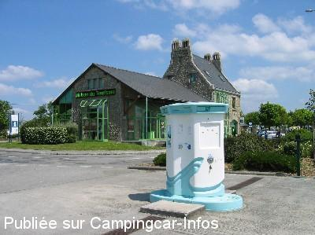

ASN = Aire de services avec stationnement nuit possible de :
CROZON
(N° 588)
Accès/adresse :
Boulevard de Pralognan
Place de la Gare
29160 CROZON
Place de la Gare
29160 CROZON
Latitude : (Nord) 48.24766° Décimaux ou 48° 14′ 51′′
Longitude : (Ouest) -4.49341° Décimaux ou -4° 29′ 36′′
Tarif : 2012
Stationnement gratuit
Services : 2,08 €
Électricité : 2 €
Paiement par carte bancaire
Type de borne : RACLET
Services :


Autres informations :
Ouvert toute l'année
40 emplacements
Stationnement limité à 48 heures
Tel : +33(0)298 271 028
http://www.crozon.com

Le 31/05/2004 par Gadget
de
SENECH
le 24/04/2012 :
§
Et bien, ça y est,la borne est de nouveau en état.Une protection a été installée et tout fonctionne.
Tarif: 2,08€
§
Et bien, ça y est,la borne est de nouveau en état.Une protection a été installée et tout fonctionne.
Tarif: 2,08€
de
SENECH
le 30/07/2011 :
La borne est hors service, monétique enlevée, plus d'accés à l'eau propre, dommage en cette saison ou il y a beaucoup de passages.
Est ce provisoire?
La borne est hors service, monétique enlevée, plus d'accés à l'eau propre, dommage en cette saison ou il y a beaucoup de passages.
Est ce provisoire?
de
SENECH
le 20/11/2010 :
Nouvelle borne, payement par CB, malheureusement il pleuvait fort lors de notre passage, et comme elle est orientée plein ouest et les claviers non protégés, impossible de payer et donc de faire le plein d'eau.
Heureusement qu'à Morgat il existe encore un bonne vieille borne euro relais.
Nouvelle borne, payement par CB, malheureusement il pleuvait fort lors de notre passage, et comme elle est orientée plein ouest et les claviers non protégés, impossible de payer et donc de faire le plein d'eau.
Heureusement qu'à Morgat il existe encore un bonne vieille borne euro relais.
de
Gillou 56
le 16/07/2009 :
Un grand parking sans charme et bruyant mais avec beaucoup de places. Si on ne peut pas faire autrement, on peut éventuellement y passer une unique nuit.
Un grand parking sans charme et bruyant mais avec beaucoup de places. Si on ne peut pas faire autrement, on peut éventuellement y passer une unique nuit.
de
Nicole Raban-Revel
le 14/04/2009 :
Pour le couchage, vraiment si on ne peut pas faire autrement (ce qui était notre cas). Plat, mais pas vraiment isolé. Enfin, la caserne des pompiers mitoyenne apporte un semblant de sécurité.
Pour le couchage, vraiment si on ne peut pas faire autrement (ce qui était notre cas). Plat, mais pas vraiment isolé. Enfin, la caserne des pompiers mitoyenne apporte un semblant de sécurité.
de
Dougère Christian
le 21/08/2007 :
Aire trop bruyante en août, nous avons préféré le Camping des Pins.
Aire trop bruyante en août, nous avons préféré le Camping des Pins.
de
yann
le 15/08/2007 :
Grande facilité de stationnement. Passage important de voitures donc bruyant.
Grande facilité de stationnement. Passage important de voitures donc bruyant.
de
martine Rivory
le 20/07/2006 :
Service 2€ par carte bancaire, nombreux stationnements, très calme.
Service 2€ par carte bancaire, nombreux stationnements, très calme.